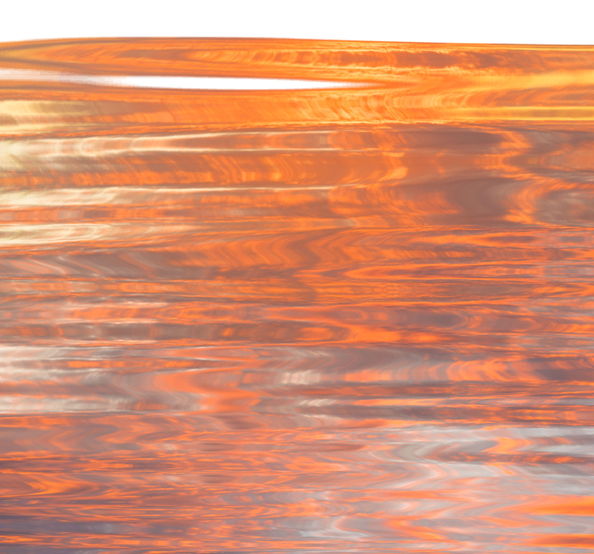
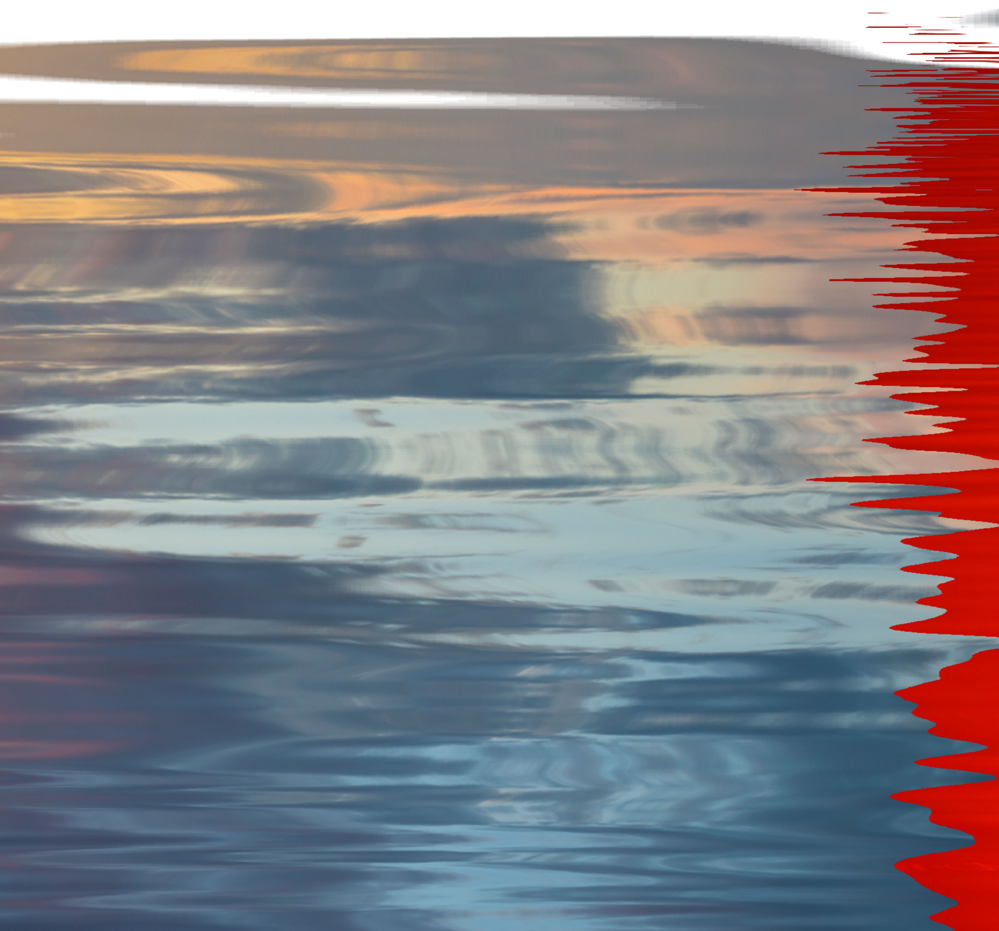
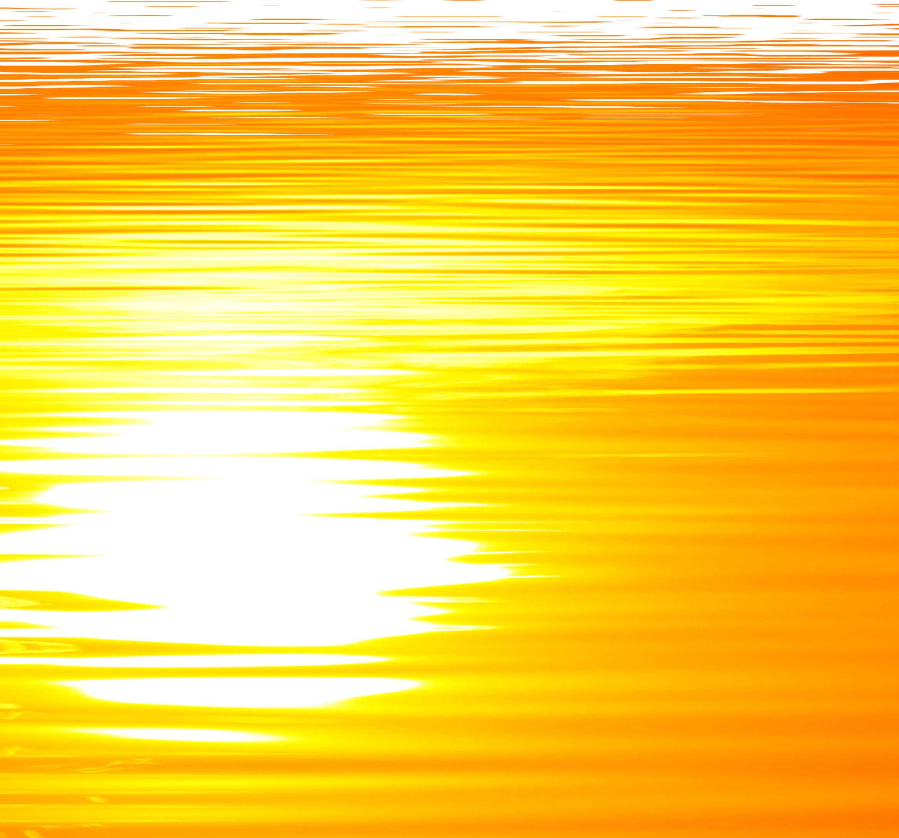
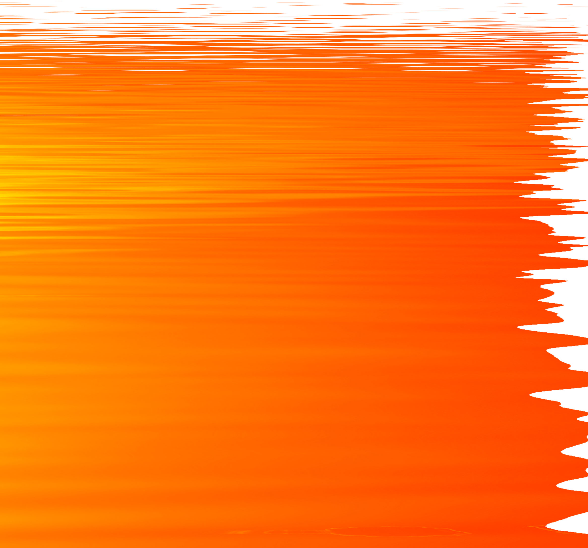
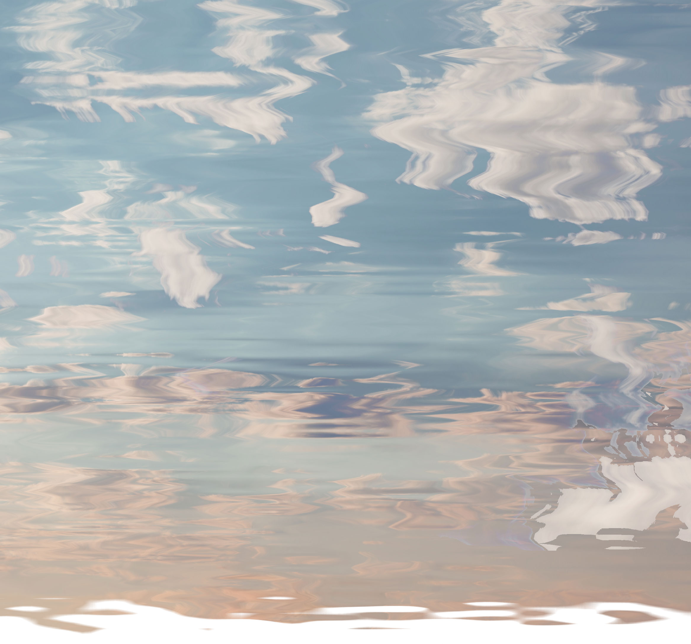
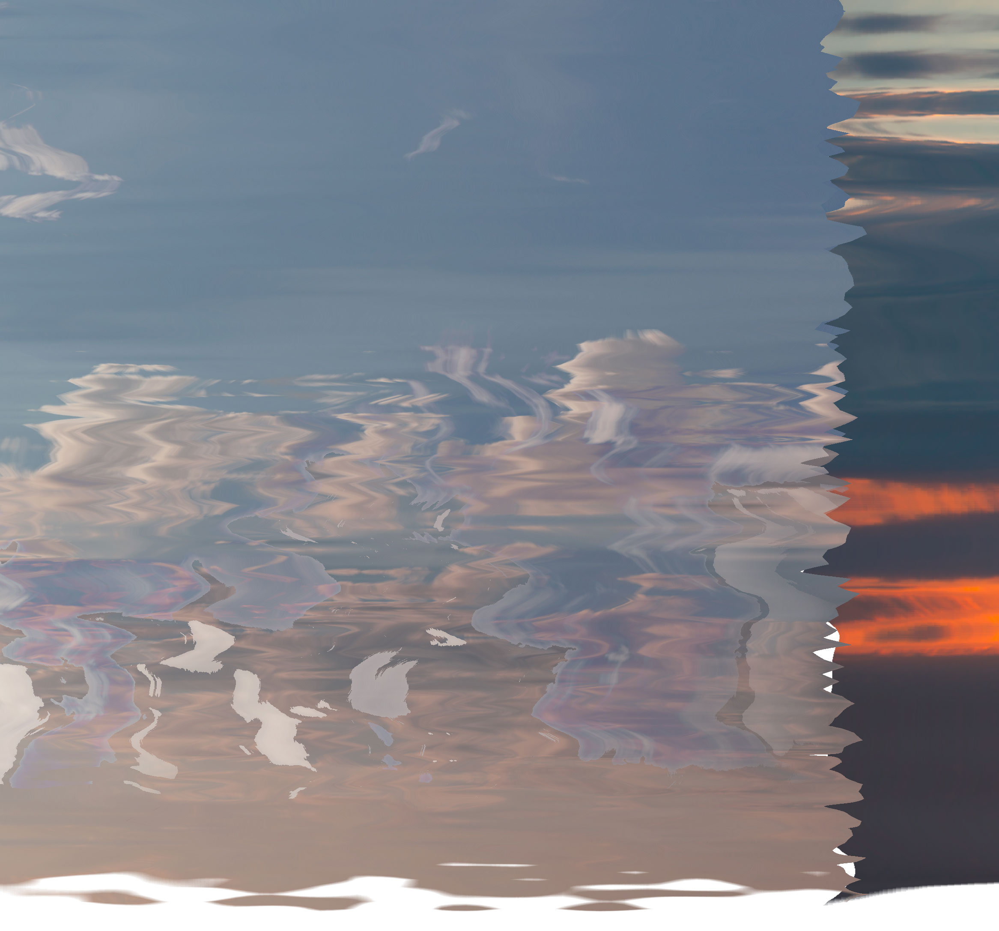
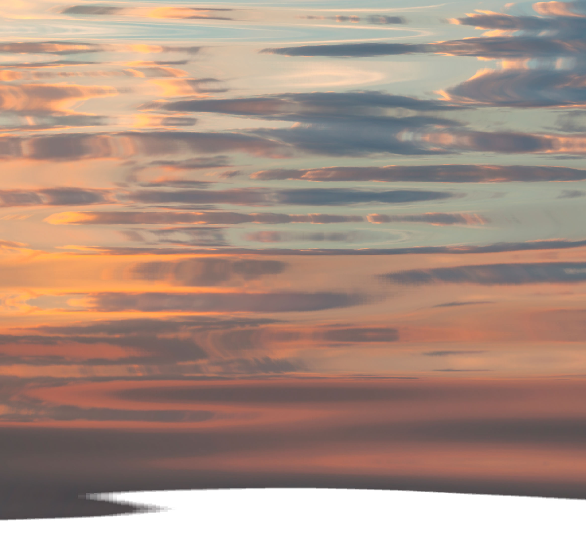
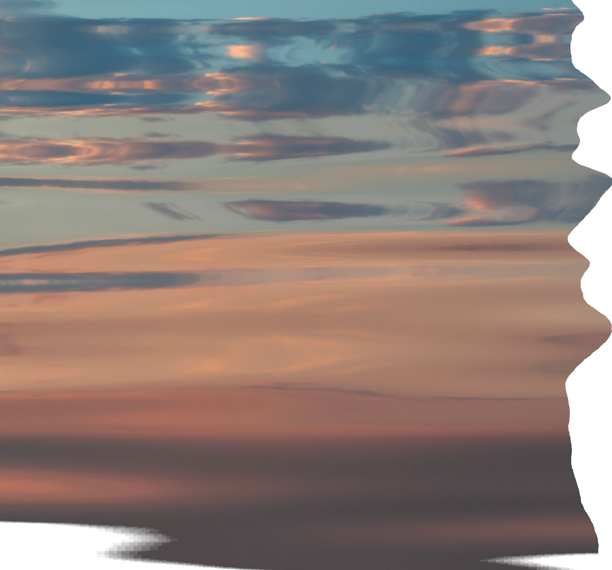

|  |  |  |  | ||||
 |
|||||||
 |
|||||||
 |
 |  |  |  |

Lilith & Venus are two godesses. Venus stands for beauty and art. Lilith stands for true female power and sexuality. Venus stands is the female archetype for beauty and art. While Lilith is a crazy bich. A graduation project made by Johanna Lundberg with music by Lithe & Free.
This is a garden interpreted as a website. Take a scroll around or click on one of the objects below.
The objects and background are made of synthetic materials; like 3d-objects and manipulated stock photos to create an experience of nature in a digital format. Css-animations and different scroll speeds creates an illusion of depth and weight.